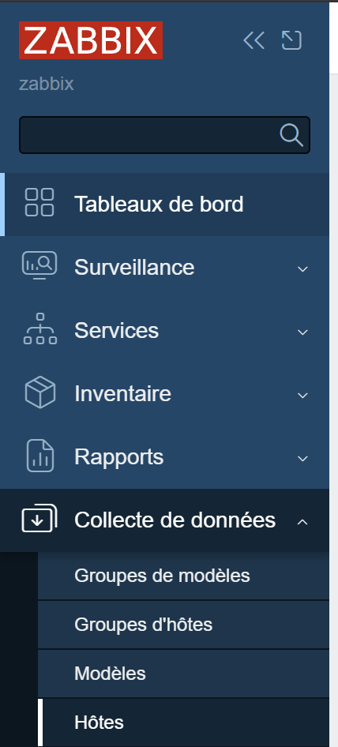
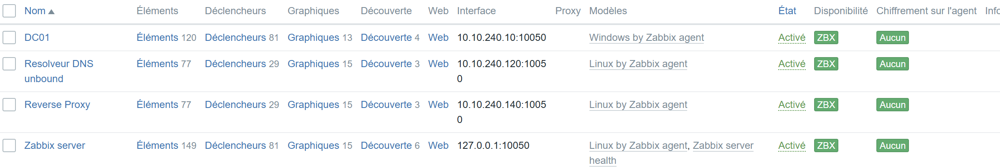

Installation de Zabbix sur Debian¶
Cette documentation vous guide à travers l'installation de Zabbix sur Debian avec MySQL comme base de données.
Étape 1 : Préparer le système¶
Avant de commencer l'installation, mettez à jour votre système Debian :
sudo apt update
sudo apt upgrade -y
Étape 2 : Installer les dépendances¶
Installez les paquets nécessaires, y compris Apache, MySQL et PHP :
sudo apt install -y apache2 mysql-server php php-mbstring php-gd php-xml php-bcmath php-mysql libapache2-mod-php
Étape 3 : Ajouter le dépôt Zabbix¶
Téléchargez et ajoutez le dépôt officiel de Zabbix à votre système :
wget https://repo.zabbix.com/zabbix/6.0/debian/pool/main/z/zabbix-release/zabbix-release_6.0-1+debian10_all.deb
sudo dpkg -i zabbix-release_6.0-1+debian10_all.deb
sudo apt update
Étape 4 : Installer Zabbix¶
Installez le serveur Zabbix, le frontend et l'agent :
sudo apt install -y zabbix-server-mysql zabbix-frontend-php zabbix-agent zabbix-sql-scripts
Étape 5 : Configurer la base de données MySQL¶
- Se connecter à MySQL :
sudo mysql -u root -p
- Créer la base de données et l'utilisateur Zabbix :
CREATE DATABASE zabbix character set utf8mb4 collate utf8mb4_bin;
CREATE USER 'zabbix'@'localhost' IDENTIFIED BY 'motdepasse_zabbix';
GRANT ALL PRIVILEGES ON zabbix.* TO 'zabbix'@'localhost';
FLUSH PRIVILEGES;
EXIT;
- Importer les tables Zabbix :
sudo zcat /usr/share/doc/zabbix-sql-scripts/mysql/server.sql.gz | sudo mysql -u root -p zabbix
Étape 6 : Configurer Zabbix Server¶
- Modifier la configuration de Zabbix :
Ouvrez le fichier de configuration de Zabbix pour spécifier les informations de la base de données :
sudo nano /etc/zabbix/zabbix_server.conf
Modifiez les lignes suivantes :
DBHost=localhost
DBName=zabbix
DBUser=zabbix
DBPassword=motdepasse_zabbix
- Redémarrer et activer le service Zabbix :
sudo systemctl restart zabbix-server
sudo systemctl enable zabbix-server
Étape 7 : Configurer Apache pour le Frontend Zabbix¶
- Créer une configuration Apache pour Zabbix :
Créez un fichier de configuration Apache pour Zabbix :
sudo nano /etc/apache2/sites-available/zabbix.conf
Ajoutez la configuration suivante :
<VirtualHost *:80> DocumentRoot /usr/share/zabbix ServerName zabbix.local
<Directory /usr/share/zabbix> Options FollowSymLinks AllowOverride None Require all granted </Directory>
ErrorLog ${APACHE_LOG_DIR}/error.log CustomLog ${APACHE_LOG_DIR}/access.log combined </VirtualHost>
- Activer la configuration et redémarrer Apache :
sudo a2ensite zabbix.conf
sudo a2enmod rewrite
sudo systemctl restart apache2
Étape 8 : Compléter l'installation via le Frontend Web¶
-
Accédez à l'interface web de Zabbix en ouvrant votre navigateur et en allant à
http://votre-ip/zabbix. -
Suivez les instructions de l'assistant d'installation :
- Assurez-vous que les paramètres de la base de données sont correctement renseignés (hôte, nom de la base de données, utilisateur et mot de passe).
- Laissez les paramètres par défaut pour la configuration du serveur Zabbix et poursuivez l'installation.
Étape 9 : Configurer l'Agent Zabbix (optionnel)¶
- Installez l'agent Zabbix sur les machines que vous souhaitez surveiller :
sudo apt install -y zabbix-agent
- Modifiez la configuration de l'agent pour qu'il pointe vers le serveur Zabbix :
sudo nano /etc/zabbix/zabbix_agentd.conf
Modifiez la ligne Server pour y mettre l'adresse IP de votre serveur Zabbix :
Server=adresse_ip_du_serveur_zabbix
- Redémarrez l'agent Zabbix :
sudo systemctl restart zabbix-agent
sudo systemctl enable zabbix-agent
Etape 10 : Ajouter un hote a l'appli zabbix¶

=> Crée un hote => mettez les infos
Une fois tout ca fait vous devriez voir l'hote apparaitre dans la liste des hotes
